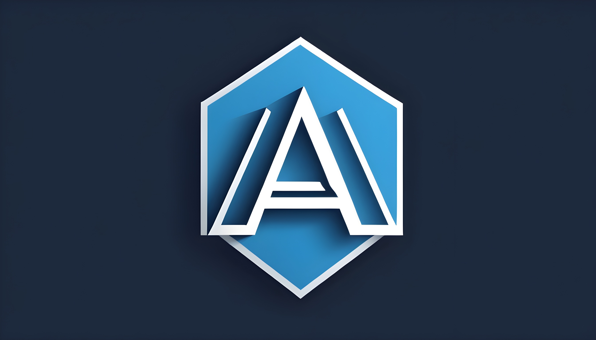

<mat-toolbar color="primary" class="mat-elevation-z8">
  <div class="menu">
    <button (click)="drawerMenu.toggle()" mat-icon-button>
      <mat-icon *ngIf="!drawerMenu.opened"> menu </mat-icon>
      <mat-icon *ngIf="drawerMenu.opened"> close </mat-icon>
    </button>
    <span>AUDEMY</span>
  </div>

  <div class="nav-buttons">
    <button routerLink="/" mat-button>Home</button>
    <button routerLink="/courses" mat-button>Courses</button>
    <button (click)="drawerProfile.toggle()" mat-icon-button>
      <mat-icon> account_circle </mat-icon>
    </button>
  </div>
</mat-toolbar>

<mat-drawer-container autosize>
  <mat-drawer #drawerMenu position="start" mode="side">
    <mat-divider></mat-divider>

    <button mat-button class="menu-button" routerLink="/home">
      <mat-icon>home</mat-icon>
      <span>Home</span>
    </button>
    <button mat-button class="menu-button" routerLink="/courses">
      <mat-icon>school</mat-icon>
      <span>Courses</span>
    </button>
    <button mat-button class="menu-button" routerLink="/courses">
      <mat-icon>person</mat-icon>
      <span>Profile</span>
    </button>

    <mat-divider></mat-divider>

    <button mat-button class="menu-button" routerLink="/help">
      <mat-icon>help</mat-icon>
      <span>Help</span>
    </button>
  </mat-drawer>

  <mat-drawer #drawerProfile position="end" mode="over" class="profile">
    

    <h4 class="name">John Smith</h4>
    <p class="designation">Software Engineer</p>

    <mat-divider></mat-divider>

    <button mat-button class="menu-button" routerLink="/home">
      <mat-icon>home</mat-icon>
      <span>Home</span>
    </button>
    <button mat-button class="menu-button" routerLink="/courses">
      <mat-icon>school</mat-icon>
      <span>Courses</span>
    </button>
    <button mat-button class="menu-button" routerLink="/courses">
      <mat-icon>person</mat-icon>
      <span>Profile</span>
    </button>

    <mat-divider></mat-divider>

    <button mat-button class="menu-button" routerLink="/help">
      <mat-icon>help</mat-icon>
      <span>Help</span>
    </button>
  </mat-drawer>
  <mat-drawer-content>
    <div class="main-content">
      <router-outlet></router-outlet>
    </div>
  </mat-drawer-content>
</mat-drawer-container>
